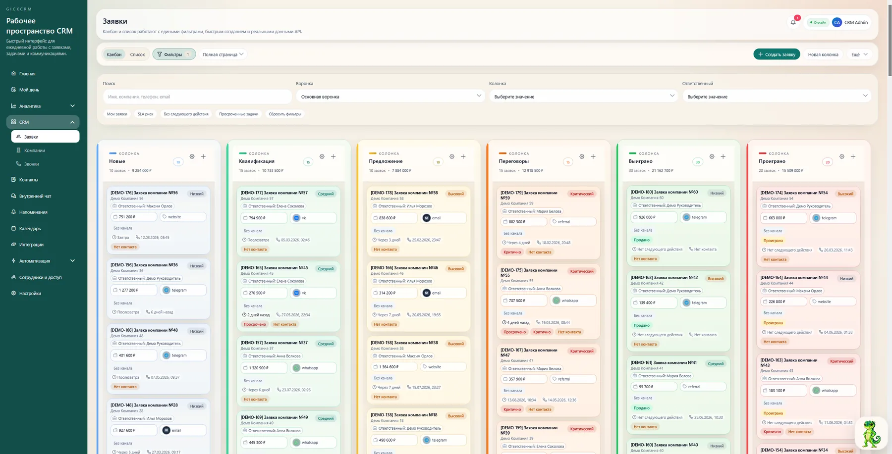
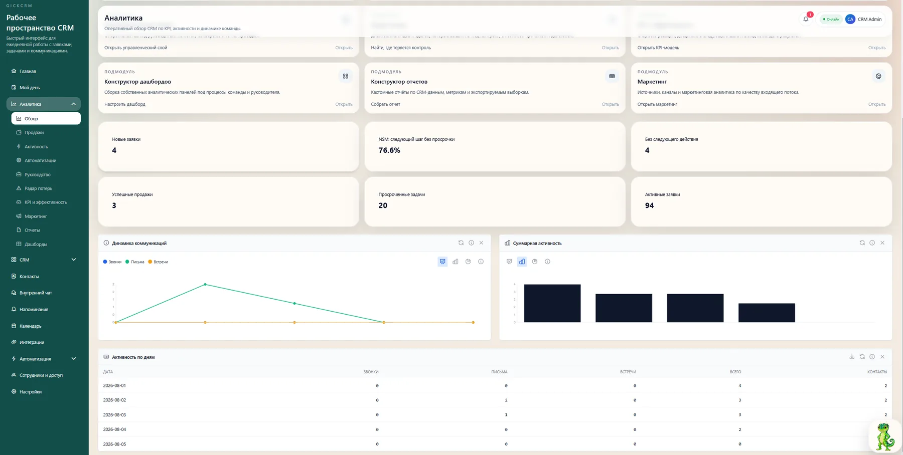
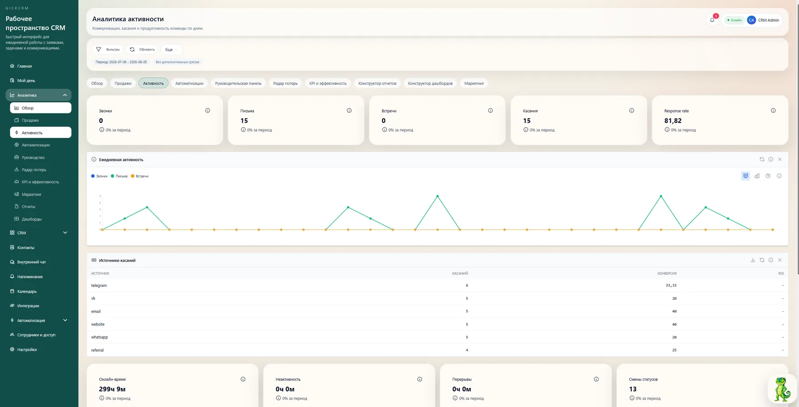
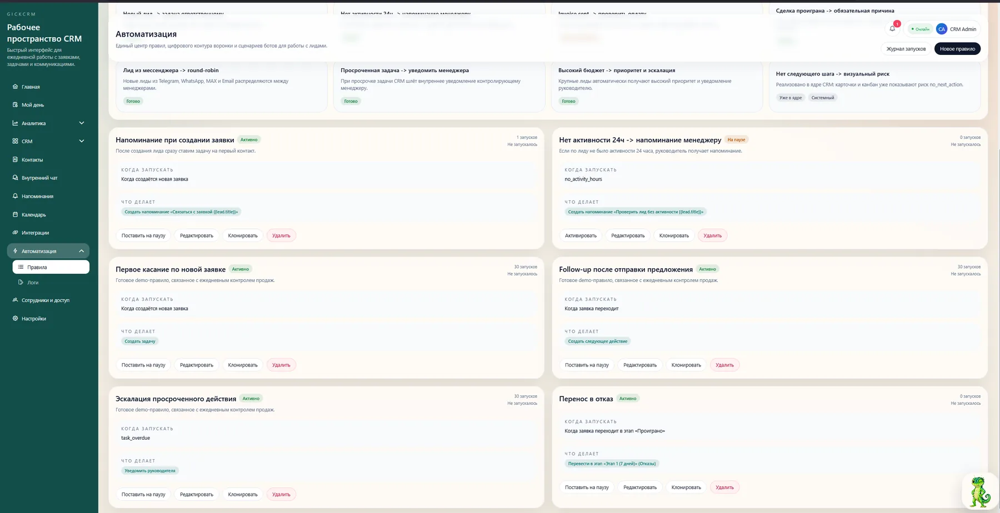
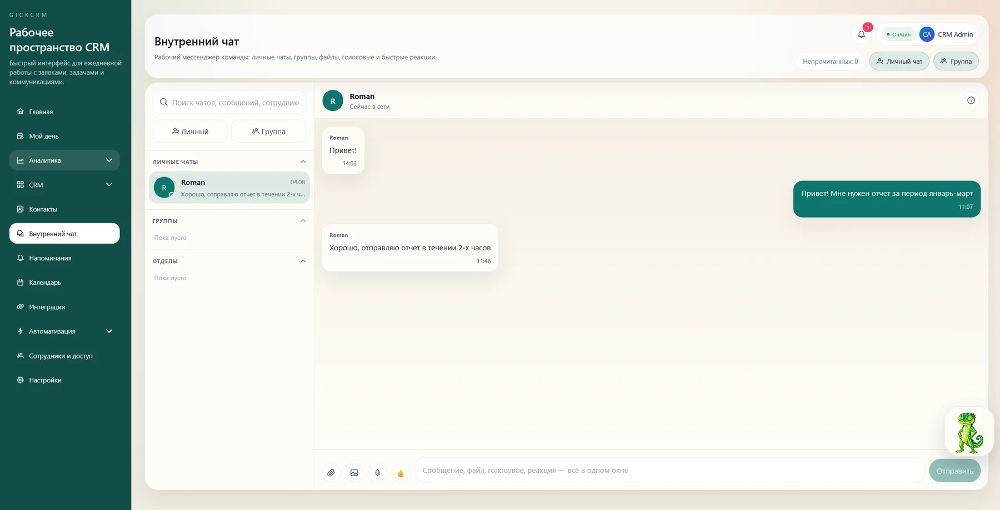
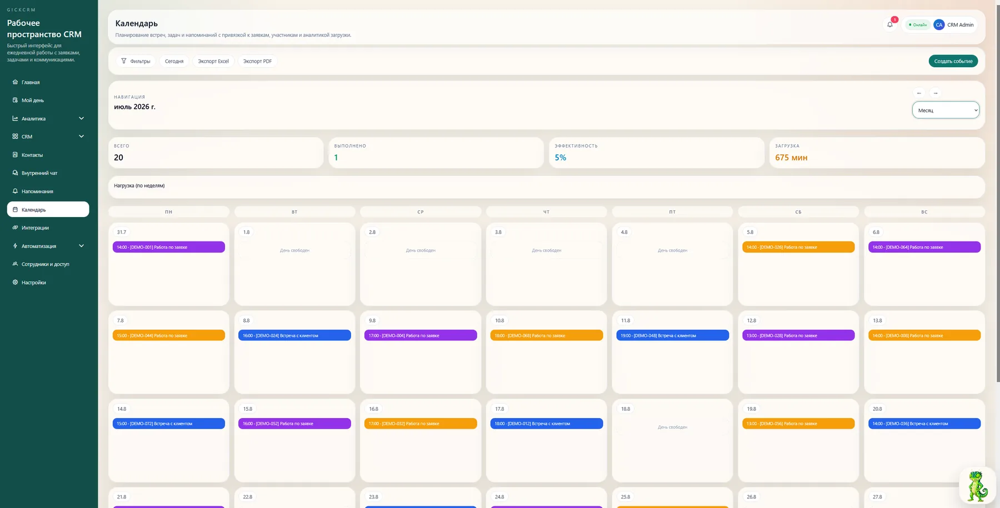
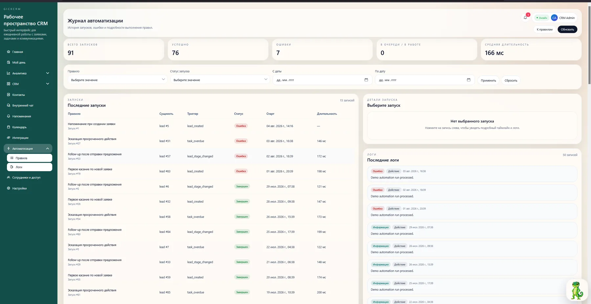
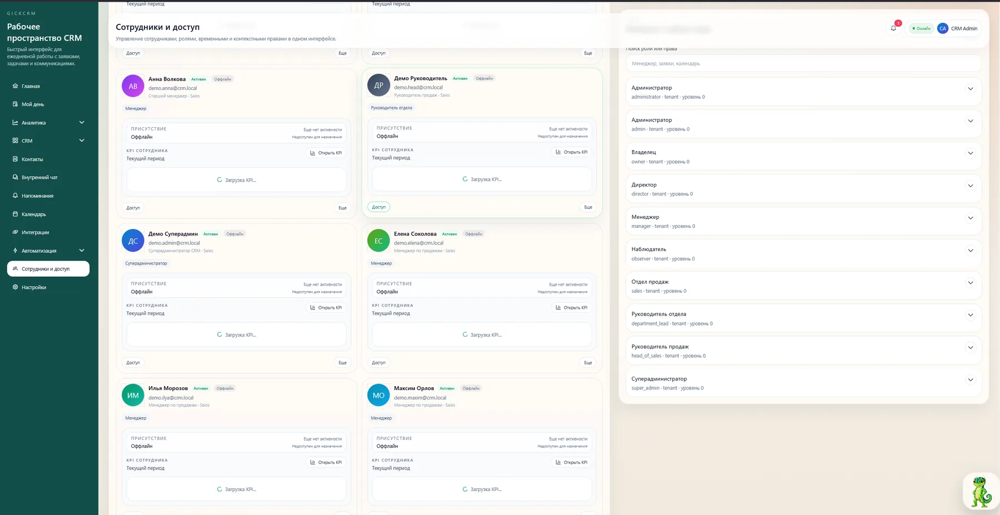

CRM для заявок, продаж, коммуникаций и контроля
Не теряйте клиентов.
Управляйте процессом.
GickCRM собирает канбан, карточку клиента, переписки, задачи, автоматизации и аналитику руководителя в одной системе. Менеджер всегда знает следующее действие. Руководитель видит, где теряются заявки и деньги.
АКМРДС+12
Команда начинает работать в первый день
Без тяжёлого внедрения и перегруженных экранов.
CRM / Канбан / Основная воронка

Листайте, чтобы увидеть продукт ↓
Единое пространство для отделов продаж, сервиса, маркетинга и клиентских команд
Продуктовый core
CRM, которая ускоряет обработку заявки
CRM, которая ускоряет обработку заявки
и делает продажи прозрачными.
Канбан, карточка клиента, история коммуникаций, следующее действие, автоматизации и аналитика руководителя. Без лишней enterprise-сложности — только то, что нужно каждый день.
▣
Рабочий экран, в котором всё под рукой
Заявки, ежедневный контур, показатели, просрочки и зоны внимания собраны в одном понятном интерфейсе.

Карточка клиента и история касаний
Контакты, этап, переписка, задачи, следующее действие и история изменений — в одном месте.
- История сообщений и звонков
- Задачи и напоминания
- Следующий шаг без просрочки
Автоматизации, снимающие рутину
Триггеры и правила не дают заявкам остывать, назначают ответственных и поддерживают дисциплину процесса.
Новая заявкаНазначить менеджераСоздать задачу
Интеграции и единое окно коммуникаций
Telegram, WhatsApp, email, телефония и другие каналы работают как единая история клиента.
TelegramWhatsAppEmailТелефонияVK
Один прозрачный процесс
От заявки до управляемого результата
GickCRM делает ежедневную работу менеджера понятной, а работу руководителя — прозрачной и управляемой.
Заявка попадает в CRM
Из сайта, мессенджеров, рекламы, email или звонка — сразу в воронку.
Менеджер видит, что делать дальше
Источник, приоритет, история, владелец и следующее действие показываются сразу.
Система контролирует движение
Просрочки, задачи и автоматизации не дают заявкам зависать без касания.
Руководитель видит слабые места
Потери, KPI, эффективность сотрудников и качество маркетинговых каналов — наглядно.
Единая система
Все модули связаны в один процесс
Заявка, коммуникация, задача, следующее действие, автоматизация и аналитика — не разрозненные инструменты, а единый поток. Данные движутся по системе без ручных переключений.
Рабочее пространство GickCRM
Всё, что нужно команде каждый день.
Единая система продаж и коммуникаций. Выберите модуль, чтобы увидеть, как он работает и какую пользу даёт менеджеру или руководителю.
Канбан продаж
Менеджер видит все сделки на одном экране с этапами, приоритетами и быстрым доступом к контексту. Перетаскивание карточек заменяет десятки кликов.
Главная панель
Ежедневный контур: задачи на сегодня, просрочки, срочные заявки и показатели — всё для быстрого старта рабочего дня без хаоса.

Аналитика
Конверсия по этапам, эффективность источников и качество обработки заявок. Руководитель видит, какие каналы приносят деньги, а какие — пустой трафик.

Автоматизации
Правила и сценарии снимают рутину: авто-назначение ответственного, создание задач при простое, напоминания о следующем действии.

Внутренний чат
Командное взаимодействие прямо внутри CRM — без переключения в мессенджеры. Контекст сделки всегда под рукой в обсуждении.

Календарь
Встречи, звонки и дедлайны в едином расписании. Менеджер не забывает о клиенте, а руководитель видит загрузку команды.

Журнал активности
Кто и когда менял статус, назначал задачу или оставил заявку без действия. Полная операционная прозрачность для руководителя.

Сотрудники и доступы
Роли, статусы и права доступа в одном экране. Руководитель контролирует, кто и к каким данным имеет доступ.
Управленческая аналитика
Руководитель видит не красивый отчёт, а реальную операционную картину.
Сколько заявок в работе, где просрочки, у кого нет следующего действия, где падает конверсия и какие каналы дают качественный входящий поток — всё в одном управленческом слое.
- ✓Продажи и воронка по этапам
- ✓Активность команды и дисциплина касаний
- ✓KPI, маркетинг и руководительские срезы
Главный обзор
OnlineОперативная аналитика CRM
Активные заявки3
Без следующего действия3
Просроченные задачи2
Понятный старт
Тарифы для роста без лишней сложности
Сильный core-продукт сначала. Расширение — только там, где оно реально повышает ценность для команды и руководителя.
Lite
Для небольшой команды, которой нужен базовый контур продаж, задач и коммуникаций.
от 3 500 ₽/ месяц
- Канбан и карточка заявки
- Задачи и следующее действие
- Базовая аналитика
- Интеграции и коммуникации
Team
Для активных отделов продаж и клиентских команд, которым нужен контроль процесса и автоматизация рутины.
По запросуПодбирается под команду
- Всё из Lite
- Автоматизации и правила
- KPI и расширенная аналитика
- Контроль руководителя
- Маркетинговые каналы и источники
Business
Для команд, где важны несколько воронок, сложные сценарии, права доступа и масштабирование.
ИндивидуальноПосле демонстрации
- Мультироли и доступы
- Несколько воронок и процессов
- Приоритетные интеграции
- Гибкие настройки и масштабирование
Демо GickCRM
Покажем, как GickCRM может работать именно в вашем процессе.
Разберём, откуда приходят заявки, как менеджеры ведут клиентов, где теряются касания и как быстро собрать сильный CRM-контур без перегруза интерфейса.

Гик поможет настроить демоДружелюбный помощник, который подскажет следующий шаг